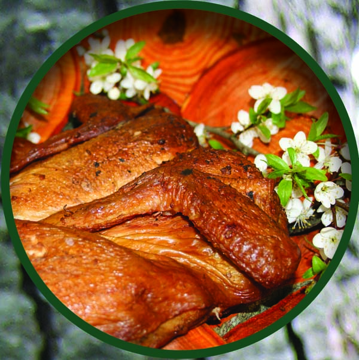
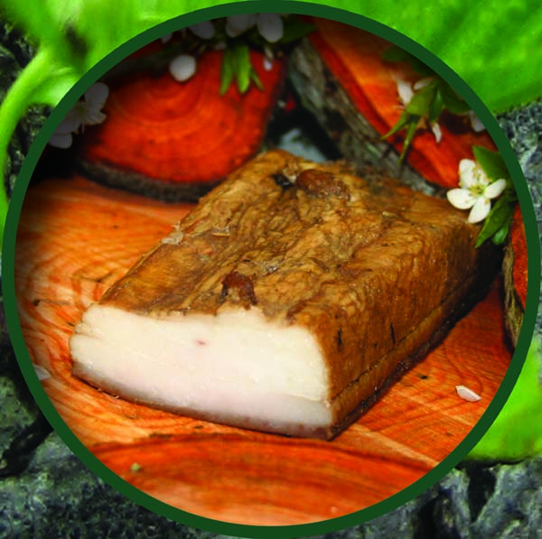
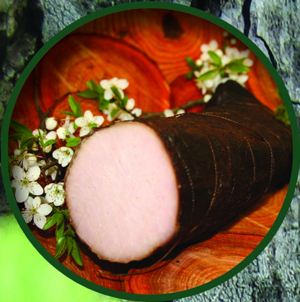

Mājas kūpinājumi nelielos apjomos
Mūsu tradicionāli gatavotie kūpinājumi tiek sagatavoti nelielos apjomos, lai katrs produkts saglabātu izcilu garšu un kvalitāti. Izmantojam tikai pārbaudītas receptes un nesteidzīgu gaļas kūpināšanas procesu, lai saglabātu īsto tradicionālo garšu.
Karstā un aukstā kūpināšana
Piedāvājam gan karstās, gan aukstās kūpināšanas metodes, lai mūsu klienti var izvēlēties tieši sev piemērotākos mājas kūpinājumus. Karstā kūpināšana ļauj iegūt sulīgus un aromātiskus produktus, savukārt aukstā kūpināšana nodrošina izcilu garšu un ilgāku uzglabāšanas termiņu.
Kvalitatīva kūpināta gaļa pēc tradicionālām receptēm
Mūsu produkti tiek kūpināti ar oriģināli piemeklētu augļkoku un citu lapukoku malku, izmantojot tradicionālos sālīšanas paņēmienus. Rezultāts ir īsta mājas kūpināta gaļa, kas saglabā autentisku garšu, kā pie mums tradicionāli tiek darīts Latvijā.
Kā pasūtīt mūsu kūpinājumus
Pasūtīšana ir vienkārša – sazinies ar mums pa telefonu vai e-pastu, un mēs sagatavosim tavus mājas kūpinājumus pēc pasūtījuma. Katrs produkts tiek rūpīgi sagatavots, lai nodrošinātu izcilu kvalitāti un īsto garšu.
Galerija


